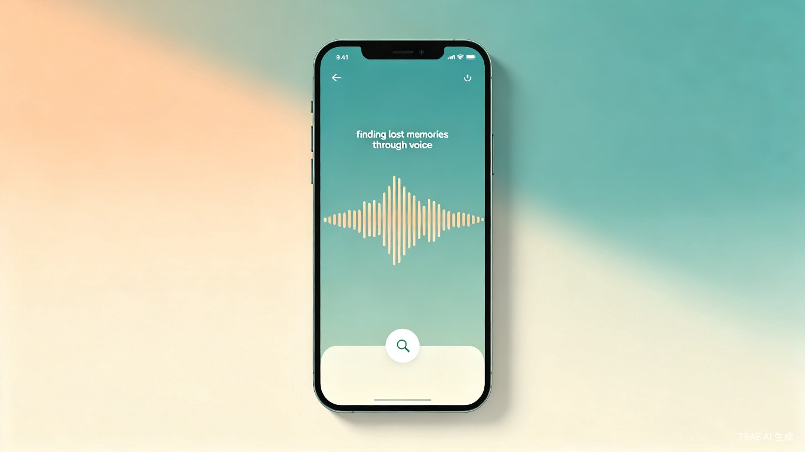

职场人士
会议中、通勤时突然想到的工作事项，不方便打字记录，需要快速语音备忘。

一款基于语音输入与智能检索的记忆助手 App，让用户随时用语音记录想法、待办和灵感，并在需要时通过关键词或语音片段快速找回。
人们每天脑中闪过无数念头，却因为没有及时记录而遗忘；即使记下了，事后想找回某条信息时，面对杂乱的笔记却无从下手。
名字取自辛弃疾《青玉案·元夕》"众里寻他千百度"——在纷繁的记忆中，总有某个瞬间你想找回那条被遗忘的语音。
面向 iOS 与 Android 的移动端 App，核心功能围绕"语音录入 + 语义检索"展开，辅以文字转写、标签管理和智能提醒。
会议中、通勤时突然想到的工作事项，不方便打字记录，需要快速语音备忘。
课堂上、图书馆里产生的学习灵感或待办事项，希望事后能按科目或关键词找回。
喜欢记录日常感悟、旅行见闻、育儿点滴，希望以语音形式留存，日后翻阅回忆。
打字不便但语音输入自然流畅，需要一款操作简单、能"说"就能记的轻量工具。
传统笔记 App 需要手动输入，场景受限
语音文件无法搜索，只能靠文件名或时间回忆
信息分散在多个 App，缺乏统一入口
记了却想不起来，等于没记
语音录入速度是打字的 3 倍以上，配合语义检索，信息记录与调取的时间成本大幅降低，让用户把精力集中在真正重要的事情上。
不再依赖大脑临时记忆，"说出来就安心"的心理机制减少焦虑感，帮助用户建立更健康的个人信息管理习惯。
语音智能处理市场规模持续增长，面向个人效率工具的垂直场景存在明确付费意愿，可通过高级检索、云存储扩容和团队协作功能实现商业化。
降低数字工具使用门槛，让不擅长打字的人群也能享受技术便利；语音作为最自然的交互方式，有助于推动无障碍信息普惠。